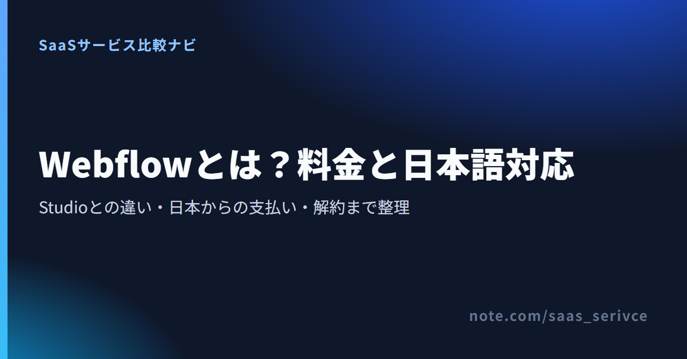

Webflowには「ノーコードでここまで作れる」という声と「英語の画面で挫折した」という声の両方があり、どこまで自分で手を動かすかで評価が分かれます。
公式情報と公開レビューをもとに、できること、料金、日本から契約するときの注意点をまとめました。Studio・WordPress・Framer・Wixと比べて決める材料にしてください。
料金ページでは、公開用のSiteプランと制作チーム用のWorkspaceプランを別々に見比べられます。
Webflowは、デザイン・CMS・ホスティングを1つのサービスで扱えるWeb制作ツールです。コードを書かずに細部まで作り込める反面、管理画面は英語で、CSSの考え方も求められます。
Webflow（読み方はウェブフロー）は、Webflow社が提供するWeb制作サービスです。画面上でレイアウトを組み、記事をCMSで管理し、完成したサイトをWebflowのサーバーから公開します。
ノーコードと紹介されますが、実際は「HTMLとCSSの作業を画面で操作する」道具で、余白やクラスといったWeb制作の考え方をそのまま扱います。
なお「ウェブフロー」で検索すると出てくるワークフローシステムの「Create!Webフロー」や、Java向けの「Spring Web Flow」は、Webflowとは関係のない別の製品です。
Webflowが合うのは、次のような人です。
次の条件に当てはまるなら、別の選択肢から比べたほうが早く決まります。
見た目の組み立てから、CMSでの記事管理、Webflowのサーバーでの公開までが1つのサービスで完結します。多言語化と分析は追加機能として、ECは専用のプランとして別に契約します。
編集画面のDesignerでは、画面幅ごとのレイアウト、ホバーやスクロールに合わせた動き、メニューやスライダーといった部品をコードなしで組めます。
ブログ記事や導入事例はCMSの「コレクション」で管理し、一覧と詳細ページのデザインは1回作るだけで済みます。公開後の文章の更新は、更新担当に任せられます。デザイン権限を持たない編集用の席を用意し、Content editorなどのロールを割り当てる形です。
フォームも標準で置けます。CMSとフォームは、どちらも無料のStarterで、上限付きながら試せます。
サイトはWebflowのサーバーで公開するため、レンタルサーバーは要りません。独自ドメインを使うには、サイトごとに有料のSiteプランが必要です。
タイトルや説明文、リダイレクト、サイトマップといったSEOの設定も管理画面で扱えます。サイトマップは自動で作られますが、ページごとのタイトル・説明文の設定と301リダイレクトは、有料のSiteプラン（または有料のWorkspaceプラン）が前提です。
目的によっては、通常のSiteプランとは別に次の契約が要ります。
Webflow AIはAI機能の総称で、AIによるサイト生成、操作を会話で尋ねられるAI Assistant、文章の生成、代替テキストやメタ情報の不足を洗い出すAuditパネルなどを含みます。文章の生成には、有料のWorkspaceプランかSiteプランが必要です。CMSアイテムのサンプル生成はCMS付きのSiteプランが対象で、Basicでは使えません。
Figmaとの連携には、公式の「Figma to Webflow」を使います。Figmaのプラグインと、Webflow側のアプリを組み合わせて、コンポーネントや変数、スタイルを同期する仕組みです（Safariには非対応）。フォームやCMSを拡張するアプリは、第三者がWebflow Marketplaceで提供しています。使いたいサービスとつながるかは、契約前にMarketplaceで検索できます。
料金は、サイトを公開するためのSiteプランと、制作する人数や権限を管理するWorkspaceプランに分かれます。1サイトを自分で作るだけなら、無料のStarterで作り、独自ドメインで公開するときにSiteプランを選べば足ります。
支払う対象は、次の3つです。
主なSiteプランは、年払いの月額換算でBasicが$15、Premiumが$25です。1ドル=159円換算（執筆時点の目安。為替で変動）で、それぞれ約2,385円と約3,975円になります。月払いならBasicは$25、Premiumは$39で、表示価格とは別に税がかかります。
無料のStarter Siteでは、公開先がWebflow.ioのサブドメインに限られ、静的ページは2ページ、CMSの項目は50件、月間の訪問は1,000までです。操作やCMSの仕組みを確かめる段階なら十分な枠です。
BasicにはCMSがないため、ブログや事例をCMSで管理するならPremiumが前提です。CMSを使わない数ページの会社案内やLPなら、Basicで足ります。
2026年5月から、新規購入できるプランでは旧CMSプランとBusinessプランがPremiumに統合されています。旧プラン名のままの紹介記事もあるため、比べるときは公式の現行プランを基準にしてください。
料金ページでは、BasicとPremiumでのCMSの有無と件数、月間の帯域（10GB／50GB）の違いを確認できます。
管理画面は英語で、日本語で表示したいときは第三者のChrome拡張を使います。日本語のサイト自体は問題なく作れ、支払いはJCBを含むカードでUSD請求です。
管理画面も公式ヘルプセンターも英語版だけです。日本語で表示したい場合は、IGNITE社が開発した第三者のChrome拡張「Webflow 日本語化」を使います。拡張が原因の不具合は、Webflowではなく拡張の提供元へ問い合わせるよう案内されています。
サイトの本文やCMSの記事は日本語で作れます。サポートはSupport Portalから申請し、メールで回答を受け取る形です。日本語で対応するかどうかは、公式情報に記載がありません。
Visa、Mastercard、American Express、Discover、JCB、Diners Clubのカードで申し込め、請求はUSDです。国外発行のデビットカードは、継続課金に対応するかを発行銀行へ確認するよう公式に案内されています。
請求書はWorkspace設定のBillingからPDFで保存でき、通貨はUSDだけです。SiteプランとWorkspaceプランは別々に請求され、1枚にはまとめられません。消費税やインボイス制度との関係は、経理処理の前に税理士に確認してください。
SiteプランはSite settingsのPlans、WorkspaceプランはWorkspace settingsのPlansから、無料のStarterへダウングレードして自動更新を止めます。別契約なので、片方を止めてももう片方の請求は続きます。
原則として支払い済みの期間の終わりまでは使えます。新規購入のプランは14日以内なら返金を申請でき、更新料や追加の席、テンプレートは返金の対象外です。
料金ページでは、BasicとPremiumの月払いと年払いの価格を見比べられます。
公開レビューでは、デザインの自由度と保守の手間の少なさが評価される一方、英語の画面と学習時間、プランの分かりにくさが不満として挙がっています。
無料のStarterですぐ制作を始められます。白紙から組むより、テンプレートか複製が許可された公開サイトを土台にして、分からない操作は公式の学習サイトとヘルプで調べる進め方が現実的です。
登録とログインは公式サイトの画面右上から行います。2段階認証はAccount settingsのSecurityから有効にでき、Google Authenticatorなどの認証アプリでQRコードを読み取って設定します。
設定時に一度だけ表示されるバックアップコードは、必ず控えておいてください。クライアントのサイトを預かるなら、2段階認証は最初に済ませておきたい設定です。
公式マーケットプレイスには無料と有料のテンプレートがあります。有料テンプレートはSiteプランとは別の一回払いで、原則として1つの案件にだけ使えるライセンスです。受託で複数のクライアントに同じテンプレートを使うなら、案件ごとに購入が要ります。
Made in Webflowは、ほかのユーザーがWebflowで公開したサイトを見られるギャラリーです。「Cloneable」と表示されたサイトは自分のWorkspaceへ複製でき、構造を確かめながら作り替えられます。ただし、コードコンポーネントを使うサイトは複製できません。各サイトの著作権情報は詳細画面に表示されます。
Webflow Universityは、Webflow社が無料で公開している学習サイトです。動画のコースやラーニングパスのほか、公式の認定制度も用意されています。
ナビゲーションメニューやスライダー、フォントの変更、ホバー時の動きなど個別の操作で迷ったら、Universityと公式ヘルプを英語の機能名で検索すると手順が見つかります。
日本語と円建てならStudio、サーバーを自分で持つならWordPress、デザイン中心で素早く出すならFramer、テンプレートで短時間に作るならWixが候補です。CSSの考え方での作り込みと、規模の大きいCMSを重視するならWebflowが残ります。
Webflowとの一番の違いは、管理画面・ヘルプ・チャットサポートまで日本語で完結する点です。
日本居住者は円建て・税込で支払えて、JCBも使えます。適格請求書の発行にも対応しています。WebflowはUSDの請求書だけなので、経理の手間を減らしたい法人にはこの差が大きく効きます。
Freeプランでも50ページまで公開でき、独自ドメインは年払いで月額590円のMiniプランから使えます。Webflowで独自ドメインを使う最安のBasicは、年払いで月額約2,385円（税別）です。それでも、クラスを使ってCSSと同じ考え方でスタイルを管理したいなら、Webflowが候補に残ります。
料金ページでは、各プランの月払い・年払いを税込の円表示で比べられます。
WordPressは、自分で用意したサーバーに入れて使うソフトウェアです。サービスとして契約するWebflowとは、ここが根本から違います。
本体はGPLライセンスで、商用でも利用料はかかりません。そのかわりサーバーやドメイン、有料テーマの費用は各契約先に払い、更新やバックアップも自分で担います。日本語の公式ドキュメントとフォーラムはコミュニティ運営で、有償の窓口ではありません。
サーバーの管理やプラグインの更新を自分で持たず、デザインとCMSを1つの管理画面で済ませたいなら、Webflowを選ぶ理由になります。
日本語の公式サイトから、ダウンロードとドキュメント、フォーラムに進めます。
Webflowと比べると、Framerは無料プランの公開枠が広く、デザインしたページをすぐ公開まで持っていけます。
FreeプランでもFramerのサブドメインで最大1,000ページまで公開でき、独自ドメインは年払いで月額$10のBasicから使えます。多言語化のLocalizationは日本語を含む238の言語・地域に対応しますが、編集画面の日本語化とは別の機能です。初回購入から7日以内なら返金の対象です。LPやポートフォリオを短期間で出したいデザイナーの候補になります。
一方で、有料プランのCMSはBasicで2コレクション、Proでも10コレクションまでです。WebflowのPremiumは40コレクション・20,000件まで扱えるため、記事や事例の種類が多いサイトならWebflowが有利です。
料金ページでは、BasicとProのCMSコレクション数や帯域の違いを確かめられます。
Webflowとの一番の違いは、日本語のエディタで、Web制作の知識がなくてもテンプレートから形にできる点です。
無料プランでも公開できますが、Wixの広告が表示され、URLはwixsite.comのアドレスになります。有料プランはパーソナルが月額1,300円（税別）からで、月額に契約期間をかけた金額を一括で前払いします。全プランに14日間の全額返金保証があり、困ったときは日本語のヘルプセンターで調べられます。
テンプレートの枠を超えて、レイアウトを一から自分で組みたいならWebflowです。
料金ページでは、プランごとの月額と独自ドメインが1年無料になる条件を確認できます。
英語の画面に慣れられるか、CMSを使うならPremium（年払いで月$25）を払えるかが、Webflowを選ぶかどうかの分かれ目です。無料のStarterで操作とCMSの仕組みを試してから、Siteプランを選んでください。
Webflowを選んでよいのは、次の条件がそろうときです。
次に当てはまるなら、別のツールも並べて検討してください。
無料のStarterから登録できます。独自ドメインで公開するとき、CMSを使うサイトならPremium、CMSを使わない小さなサイトならBasicを選びます。